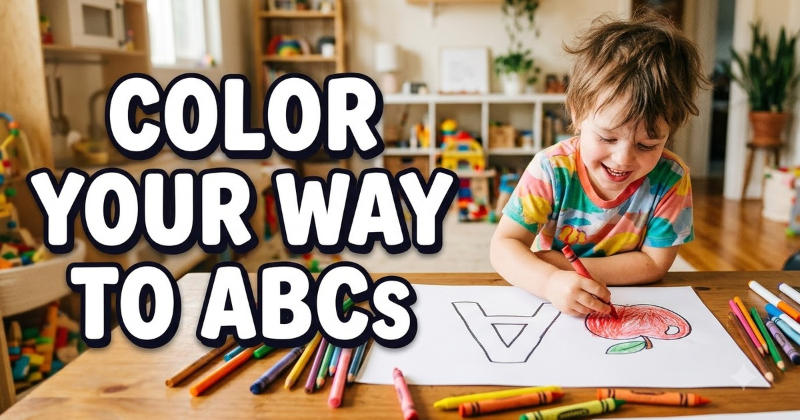

How Coloring Helps Your Child Learn the Alphabet

Before a child can read, they need to know their letters — what each one looks like, what it is called, and that it stands for a sound and a word. Coloring is one of the gentlest ways to practice all of that. A big letter on a page gives a child time to look at it, say it, trace it, and color it — again and again, without any pressure. Here is why coloring can help your child learn the alphabet, and how to get the most out of it. For more letter play, try our easy alphabet activities for toddlers at home.
1. Alphabet coloring pages make letter shapes familiar
Every letter has its own shape. A is a triangle with a bar across it. B has a straight back and two bumps. O is a round circle. To a young child, those shapes can look alike at first — b and d, p and q, m and n. Coloring a big letter slowly is one of the simplest ways to practice noticing what makes each letter different. The crayon follows the shape. The eyes follow the crayon. And the shape sinks in a little more each time. Over weeks of coloring, the letters stop being a jumble and start being familiar — the child has seen them, touched them, and filled them in.
2. A picture gives each letter a meaning
A letter on its own is just a shape. A is for Apple changes that. Now the letter stands for something a child knows — a red, crunchy fruit they have held in their hand. That link is the heart of early reading: a printed letter represents a sound, and sounds make words. Reading Rockets calls this the alphabetic principle — the understanding that there are systematic and predictable relationships between written letters and spoken sounds. Coloring the apple next to the A lets a child practice that link with their hands, not just their ears. The picture makes the letter worth remembering, and the letter makes the picture worth talking about.
3. Saying letters out loud while coloring
Coloring gives a child a reason to say letter names out loud. 'This is A. A is for Apple.' Hearing and saying the name, again and again, is how the name sticks. Letter naming matters: Reading Rockets notes that letter naming is a strong predictor of later reading success, and that learning letter names is a foundational skill in learning to read. NAEYC lists naming alphabet letters among the things most young children learn about literacy in the preschool years. You do not need a lesson plan. Just name the letter as your child colors it, and let them say it back when they are ready. If they say the wrong name, there is no need to correct them on the spot — just say the name yourself, gently, and keep coloring.
4. Tracing and coloring practice the hands for writing
Staying inside a big letter takes the same careful hand movements a child will use later to form letters themselves. The crayon has to go up, around, and down — the same strokes that make a letter. That is early writing practice, disguised as play. A fist grip is completely normal in the early years. Toddlers commonly hold a crayon in their whole hand, and children move through grips at their own pace — you do not need to correct a young child's grip. Chunky crayons and big letters make the practice comfortable, and coloring on a vertical surface, like paper taped to a wall, can help build wrist strength too.
5. Coloring grows a child's letter vocabulary
Each letter page comes with new words to say: the letter name, the picture word, the color, and what is happening in the picture. 'B is for Ball. The ball is blue. It is bouncing.' Talking while coloring turns one letter into a little conversation, and conversations are how vocabulary grows. A short chat after coloring can be just as valuable as the coloring itself — it gives your child a reason to use the new words out loud, and it shows them that their ideas are worth hearing. Try asking open questions, like 'What is the cat doing?' instead of only 'What letter is that?' — the story your child tells is language practice too.
6. Letters start showing up everywhere
Once a child has colored a letter, they start noticing it everywhere — on a cereal box, on a street sign, on the first letter of their own name. PBS KIDS for Parents points out that when a child notices a symbol or word means something, they are starting to connect symbols to ideas, sounds, or words — the foundation for understanding that words and letters represent something. You can help by pointing out letters in everyday print: the M on a menu, the S on a stop sign. Each sighting is another small bit of practice, and it shows your child that letters are not just for coloring pages — they are part of the real world.
7. A gentle start, not a race
It is easy to worry about whether your child knows enough letters. Try not to. Letter recognition grows gradually through the preschool years, and every child learns at their own pace — some children know a handful of letters at 3, others collect them quickly at 4 or 5. Coloring is not a test, and it is not a race. The child who colors one letter a day, or the same favorite letter all week, is still practicing. What matters is that letters feel friendly, not stressful — because a child who likes letters will keep coming back to them.
8. How to make the most of letter coloring
- Color one letter at a time — a new letter each day, or one letter for a whole week if your child loves it.
- Say the letter name and the picture word out loud together: 'C is for Cat.'
- Let your child choose the colors. There is no wrong color for an apple, and choosing can help them feel proud of the page.
- Keep sessions short — many toddlers are happy with 5 to 10 minutes, and many preschoolers with 10 to 20 — and let your child stop whenever they lose interest.
- Display finished letter pages on the fridge or the wall, in order, so your child can see the alphabet growing.
- When your child is ready, let them trace the letter with a finger or a crayon before coloring it in.
- Point out the first letter of your child's name — it is usually the first letter they learn to recognize.
- Try one letter a day from My First ABC Book — A is for Apple, B is for Ball.
- Print a fresh copy from our free printables when your child wants to color a favorite letter again.
Try it yourself
Start with our free sample — four activities from our four books, no sign-up needed.
Frequently asked questions
When should my child start learning the alphabet?
Most young children learn about letters during the preschool years — NAEYC lists naming alphabet letters among the things children learn in those years. There is no fixed age by which a child must know all their letters, and every child learns at their own pace. Coloring letter pages is one gentle way to practice, not a test.
Should I teach letter names or letter sounds first?
Both, together. Research cited by NAEYC finds that teaching letter names and letter sounds together works best for young children. When you color, say both: 'This is B. B makes the sound at the start of Ball.' Keep it playful — a little at a time is plenty.
My child colors outside the lines. Is that a problem?
No. Staying inside the lines develops gradually, usually from around ages 4 to 5, and a fist grip is completely normal in the early years. The goal is practice and fun, not a perfect page. Let your child stop whenever they lose interest — short, happy sessions build a habit that lasts.
Sources
- Reading Rockets. Alphabet matching — letter naming as a strong predictor of later reading success, the alphabetic principle, and letter recognition practice.
- NAEYC. Everyday steps to reading and writing — naming alphabet letters among what most young children learn in the preschool years, and alphabet activities that can help children recognize letters.
- NAEYC (Block and Duke). Letter names can cause confusion and other things to know about letter-sound relationships — research finding that instruction in both letter names and letter sounds is best for young children.
- PBS KIDS for Parents (Deez and Cartwright, 2026). Use everyday text to boost your child's early literacy skills — connecting symbols to ideas, sounds, and words, and practicing letter recognition.
- NEO Kids & Family, Health Sciences North (Children's Treatment Centre). Early coloring skills handout for toddlers to 5 years old — guidance on hand strength, grip, and eye-hand coordination.
- NHS children's health services (Bedfordshire, Luton and Milton Keynes; Cambridgeshire and Peterborough). Getting ready to write — mark making, grip stages from palmar grasp to tripod grip, and vertical-surface coloring.